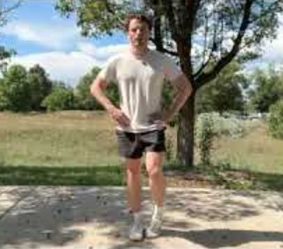
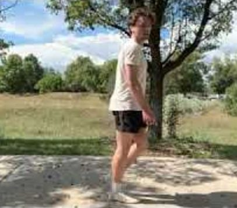

Also this week
Where you're headed
Strength has begun! Learning to enjoy it the way you have with running + developing basic capacity.
Keeping things easy on purpose. This block is about enjoyment and continuity, not capacity.
Arrive
May I enjoy things just as they are?
Say it once before you begin, then rest in whatever is there. Drop it in mid-rep if it helps, or just move. If another practice feels more alive, use that instead.The circuit


The dose
If a movement starts to feel easy or you're unsure of how to progress, just shoot me a DM.
Fifteen intervals of 1:30 running, 0:30 walking. No frequency goal any more — a range, with both ends respected.
Frequency
One a week is the floor. Enough to hold what's built. Four is the ceiling.Some images you've found useful
Methods
The foundation
Guided recording. Listen ↗ The side-lying taster: knee and hand glides, pelvis and ribcage turning together. Listen ↗Listen for enjoyment.
One continuous video. Tap a movement to jump to it.
At the desk
Practice recordings. The floor lessons work through novelty — return to them occasionally rather than daily.
Finding the space that is always available by inhabiting your body in the environment. Listen ↗ The side-lying taster: knee and hand glides, pelvis and ribcage turning together. Listen ↗ Both sides. The head joining, then differentiating; shoulder–pelvis counter-rotation. Listen ↗ Tiny knee tilts rippling through everything — desk-sized by the end. Listen ↗ The spine as a rail connecting all the stations. Listen ↗A few things that have resonated along the way.
Anything you notice between sessions — send it over whenever.
What are you noticing?
Notes you've added
Nothing yet — tap + on any screen to jot one.
Nothing new since you last shared.
Notes you send land in Tanner's inbox. If sending fails, your mail app opens with the note filled in.